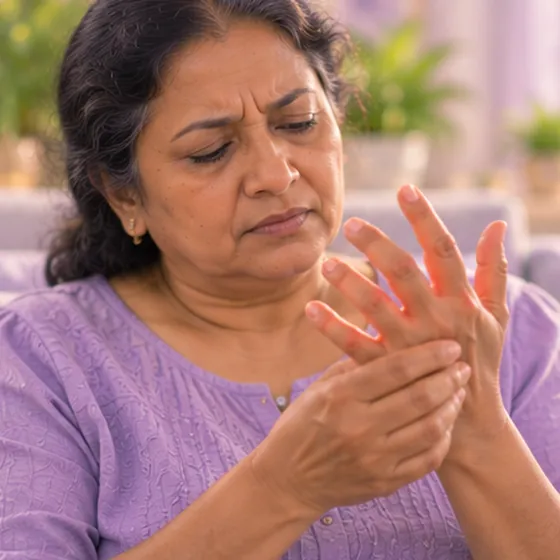

血色病
身体从食物吸收过多铁，并储存在肝、心等器官的疾病
这是什么
身体无法排出多余的铁，铁会多年慢慢累积。铁太多会加重肝、心、关节等器官的负担。
- 肝、心和关节
- 常在中年出现
- 疲倦、关节痛
- 就诊科室
- 家庭医生、血液科或肝病科医生
- 多发人群
- 成年人，多在中年；可能有家族倾向
- 传染性
- 不传染
- 病程
- 多年缓慢累积；可与医生一起安排检查和照顾
常见表现

总是疲劳疲劳 
关节酸痛肿胀关节痛 
上腹疼痛上腹痛
其他症状
- 皮肤变深或呈古铜色
- 性欲下降，或月经不规律
为什么会这样

家族遗传遗传易感性 
饮酒饮酒
其他原因
- 需要大量输血的其他血液疾病
- 没有需要却长期服用铁剂
出现这些情况请先看医生
- 胸痛、心跳很快或不规则，或呼吸困难：拨打999
- 呕血或排黑便：立即去医院
- 皮肤或眼睛发黄，或肚子肿胀
- 非常口渴且尿量很多
- 意识模糊，或发热并发抖
如果有以上情况，请先看医生，再来做调理。
本页只是一般性的健康资讯。请继续按时服用平常的药物，并继续看医生。
请继续日常治疗
请继续按医嘱服药，并按时复诊。我们的调理是温和的辅助，不能代替医疗。
日常护理

定期看医生复查定期随访 
少喝酒减少饮酒
更多自我照顾的方法
- 未问医生，不要自行服用铁剂或额外的维生素C
- 避免生吃贝类，铁过多时风险较高
- 家人可以向医生询问是否检测
告诉理疗师
- 肾脏或肝脏疾病
- 心脏病
- 糖尿病或皮肤感觉减退
- 怀孕
- 心脏起搏器或金属植入物
调理师会在开始前和你确认这一项。
相关疾病
参考资料: General information based on public health sources such as Mayo Clinic, NHS, Cleveland Clinic and NCBI StatPearls.
页面更新: 2026-10-31